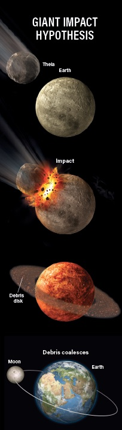

-
1
-
Olena Shmahalo/Quanta Magazine;
Source data: Sanne Cottaar

-
2
-
Cross section of the Earth's layers. Scientists have debated for decades whether material is exchanged between the core and mantle.
Yuri Arcurs / Getty IStockphoto The picture created by NASA shows the structure of the Earth. Earth's core, section layers earth and sky.
The picture created by NASA shows the structure of the Earth. Earth's core, section layers earth and sky. Decades ago, scientists first harnessed the echoes of earthquakes to make a map of Earth’s deep interior. They didn’t just find the onion layers you might remember from a grade school textbook — core and mantle covered by a cracked crust. Instead, they saw the vague outlines of two vast anomalies, unknown forms staring back from the abyss.
Decades ago, scientists first harnessed the echoes of earthquakes to make a map of Earth’s deep interior. They didn’t just find the onion layers you might remember from a grade school textbook — core and mantle covered by a cracked crust. Instead, they saw the vague outlines of two vast anomalies, unknown forms staring back from the abyss. -
There are enormous blobs deep inside the Earth. We can just barely detect them (using seismic imaging), and we really don't know what they are.
 Over the years, better maps kept showing the same bloblike features. One huddles under Africa; the other is beneath the Pacific. They lurk where the planet’s molten iron core meets its rocky mantle, floating like mega-continents in the underworld. Their highest points may measure over 100 times the height of Everest. And if you somehow brought them to the surface, God forbid, they contain enough material to cover the entire globe in a lava lake roughly 100 kilometers deep.
Over the years, better maps kept showing the same bloblike features. One huddles under Africa; the other is beneath the Pacific. They lurk where the planet’s molten iron core meets its rocky mantle, floating like mega-continents in the underworld. Their highest points may measure over 100 times the height of Everest. And if you somehow brought them to the surface, God forbid, they contain enough material to cover the entire globe in a lava lake roughly 100 kilometers deep. -
Said Vedran Lekić,
a seismologist
at the University of Maryland. “It would be like having an object in the sky, and asking, ‘Is that the moon?’ And people are like, no. ‘Is that the sun?’ No. ‘What is it?’ We don’t know!”“And whatever it is, it is intimately tied to the evolution of the Earth.”
“It would be like having an object in the sky, and asking, ‘Is that the moon?’ And people are like, no. ‘Is that the sun?’ No. ‘What is it?’ We don’t know!”“And whatever it is, it is intimately tied to the evolution of the Earth.”
-
3
-
 Neither case is settled. But in recent years, many earth scientists have begun to make the case that these vague shapes are piles of dense, smoldering rock that date to the dawn of the planet. And multiple studies in the past year have argued that their persistent influence might be responsible for long-puzzling patterns in volcanic hot spots like Hawaii.
Neither case is settled. But in recent years, many earth scientists have begun to make the case that these vague shapes are piles of dense, smoldering rock that date to the dawn of the planet. And multiple studies in the past year have argued that their persistent influence might be responsible for long-puzzling patterns in volcanic hot spots like Hawaii. -
 “These are the largest things on the planet,”“Only recently have I started thinking, ‘Wow, this is potentially super profound.’”
“These are the largest things on the planet,”“Only recently have I started thinking, ‘Wow, this is potentially super profound.’” -
This presentation presents a case for the old paradigm of bland homogenous layering giving way to an exciting picture of a dynamic and complex interior of the planet beneath our feet.In these regions, earthquake waves seem to slow down, suggesting that the blobs are hotter than the surrounding mantle.How do we know this?Rock expands when heated.That causes waves to travel sluggishly through warm regions, like the slower vibrations moving through a loose guitar string.
-
 Mysterious blobs of distinct rock are imaged using waves from earthquakes
Mysterious blobs of distinct rock are imaged using waves from earthquakes
(model from French and Romanowicz, 2015, Nature).Image credit:
Ed Garnero, Hongyu Lai, Arizona State University
-
5
-
The picture created by NASA shows the Anatomy of the earth.A cross-section of the earth showing the subsoil layer and mineral composition.Deep in our planet are two massive, continental-sized blobs that are over 100 times taller than Mount Everest. They are actively studied by Garnero's research group using seismic waves. They are currently of unknown origin.
If an omnipotent scientific illustrator halved the Earth, they would first need to cut through the thin crust we live on, which is broken into shifting tectonic plates. Then they’d pass through the rocky mantle. Only at 2,900 kilometers down, about halfway to the very center, would they hit the core-mantle boundary. -
Most of what we know about the interior of the Earth comes from the study of seismic waves from earthquakes. These waves contain vital information about the internal structure of the Earth.
 To map that part of the Earth, seismologists use the waves released by earthquakes. As the waves rattle outward, they change speed depending on what material they pass through. That causes them to arrive at different monitoring stations at different times. In 1984, the Harvard researcher Adam Dziewonski first integrated data from many different earthquakes into a global map. The two blobs showed up immediately, attached to the core on either side like Princess Leia side buns.
To map that part of the Earth, seismologists use the waves released by earthquakes. As the waves rattle outward, they change speed depending on what material they pass through. That causes them to arrive at different monitoring stations at different times. In 1984, the Harvard researcher Adam Dziewonski first integrated data from many different earthquakes into a global map. The two blobs showed up immediately, attached to the core on either side like Princess Leia side buns. -
The slowing waves gave these features their formal name: large low-shear-velocity provinces, or LLSVPs — an unmagical abbreviation that may have contributed to the topic’s low profile.“We are also to blame,”“for misnaming this feature so badly.”
-
6
-
Animation showing LLSVPs
as inferred using seismic tomography. The blobs, seen from the (a) North and (b) South Poles.The subducting slab descends into the mantle,
The blobs, seen from the (a) North and (b) South Poles.The subducting slab descends into the mantle,
where it is heated, triggering the production of magma.At first, earth scientists contemplating these warm patches argued that their one obvious trait, the warmth, was where the story ended. Some still do.
This school of thought holds that the blobs are mostly just thermal features. Over time, the mantle roils like an unbearably slow-boiling pot of water. Heat comes from the bottom, where the mantle touches the core, and this heat causes rock in the mantle to waft up in plumes. Where seismologists map blobs, they could just be seeing the blurred base regions of the world’s biggest clusters of hot plumes.
In this view, the blobs are mostly made up of the same stuff as the rest of the mantle. And their placement is dictated by plate tectonics from above, not by anything inherent and spooky about these regions. When one tectonic plate in Earth’s crust is pushed below another in a process called subduction, it sinks. This sends colder rock down into the mantle.
-
7
-
The subducting slab descends into the mantle,
where it is heated, triggering the production of magma.A comparison of global tomographic images (a) at the lower mantle with a predicted cross-section (b) of seismic properties from a meta-stable thermo-chemical structure.Potential density isopycnals are overlain.
Red star is the active vent.Scientists' shifting ideas of
what mantle plumes may look like.The opposing camp, meanwhile, doesn’t doubt that plumes rise from the hot blob regions. They just argue that the blobs are special in and of themselves.
Since the mid-2000s, several teams of seismologists have looked at earthquake signals that just graze the edges of these regions. Those signals show complicated patterns, indicating that the waves were skimming across a relatively crisp boundary. This suggests that the edges of the blobs mark a transition between materials, not just temperature.
In this view, the blobs are so-called thermochemical piles, clumps of dense rock with a distinct chemical composition. Because of their prolonged contact with the core, they are hotter than the rest of the mantle, causing plumes to sprout.
Assuming that the blobs are distinct, they could be old — the last surviving remnants of the infant Earth. One leading idea is that they formed when the entire lower mantle was an ocean of magma, shortly after the planet’s birth. -
Said Nicolas Coltice
at the École Normale Supérieure
in Paris Rock began to cool and crystallize, but iron stayed melted in the magma ocean,Then, when the last dregs of magma crystallized,they were so dense and iron-rich that they sank to the bottom of the mantle, forming the blobs.
Rock began to cool and crystallize, but iron stayed melted in the magma ocean,Then, when the last dregs of magma crystallized,they were so dense and iron-rich that they sank to the bottom of the mantle, forming the blobs. -
According to the Giant Impact Hypothesis, a large Mars-sized impactor called Theia slammed into Earth, creating an orbiting disk of debris that eventually coagulated into the Moon, as seen in this simplified graphic.Down there, they would have held out through the early planet’s greatest cataclysm: a hypothesized impact with a Mars-size body called Theia that ultimately birthed the moon. Or, Garnero speculates, the dense, distinct piles might even be fragments of Theia itself, forever interred in the deep Earth.
In the thermal-only view, plate tectonics are the true movers and shakers of the world, dictating where upwelling happens. But the thermochemical-piles camp believes that hot, heavy, stable blobs would have more of a back-and-forth dialogue with the tectonic system on the surface. Cold currents from sinking plates would push the blobs around like Silly Putty; in turn, upwelling heat from the warm blobs would push the plates right back.
-
The Hawaiian-Emperor chain is a series of islands and seamounts that stretches from Russia’s Kamchatka Peninsula to the island of Hawaii.
Last year, researchers argued that the 60-degree kink in the chain was caused by the influence of the Pacific blob.National Geophysical
Data Center/USGS
-
9
-
The Hawai'i-Emperor chain is divided into two segments, the WNW-trending Hawai'ian chain and the N-trending Emperor chain.As one progresses towards the west-northwest, the volcanoes of the Hawai'ian Islands get progressively older.To test how much the blobs are helping to pilot the geophysical ship, scientists looked to Hawaii. In the past year, researchers invoked the blobs to solve two long-standing puzzles there.
Consider first the Hawaiian-Emperor chain, a stretch of islands and underwater mountains. The chain starts at the still-growing Big Island and spans 6,200 kilometers, ending near Russia. Geologists have long explained the chain as a hot spot: As the Pacific plate slides over a fixed mantle plume, the plume pushes up new volcanic islands from below.
The only trouble is the bend. Smack in the middle of the chain is a 60-degree kink. The bend, geophysicists thought, came from a long-ago shift in the plate’s motion. -
But to actually fit all the data, a team argued this July, the plume must have moved as well. And for that they blame the blob.Previous studies showed that the Hawaiian plume may have sprouted far from the edge of the Pacific blob,But currents in the mantle would have deformed the blob and pulled the plume toward it.Eventually the plume would have parked itself near the edge of the blob.
-
10
-
The mantle plume comes from the core oceanic mantle, and it also ensures that the subduction crust can reach the lower mantle.Geochemists have long tried to explain why lava from Hawaii and other hot spot locations like Samoa, the Galápagos Islands and Iceland has unique chemical signatures. For example, lava from these hot spots contains a relatively high concentration of helium-3 — a primordial relic which predates the origin of the solar system. Scientists have found a similar pattern in neon isotopes, thought to be similarly ancient, and in isotopes of tungsten and xenon, both formed from the radioactive decay of other elements soon after the Earth was born.
-
Upwelling from the asthenospheric mantle, the decompression part melts to form an oceanic crust, and the bottom of the residual material is the lithospheric mantle.In July, a team led by Curtis Williams, a geochemist at the University of California, Davis, published simulations that traced the plumes under hot spots back down through the flowing mantle. They found that these plumes reach all the way to the blobs, and bring unique chemistry up with them. “Whatever part of the mantle [the plumes are] coming from,” said Williams, “it’s really old.”
-
The findings confirm that the blobs have to be made out of “ancient materials,”“It’s pretty exciting times.”
-
11
-
Hot rock in places previously unmapped.Hot spots are when thermal plumes from deep in the Earth rises. This heat, combined with the lower pressure at the bottom of the lithosphere, causes magma to form.As plumes and eddies swirl around the blobs, the currents may sometimes capture little clumps of the blob material itself, explaining the strangeness of hot spot lavas far above. But bigger pieces might also occasionally break off, and this may be connected to yet another suspicious pattern.
According to studies led by Trond Torsvik at the University of Oslo, the blobs also seem be linked to about two dozen surface regions called large igneous provinces — places where, at multiple times in Earth’s past, millions of cubic kilometers of lava oozed onto the surface as if through open wounds. Many of these events are themselves linked to mass extinctions like the Great Dying, the largest life-snuffing episode of the last half-billion years.
If that correlation isn’t a coincidence, Lekić speculates that these events could even be the result of blobettes calving off the main structures. If buoyed to the surface, they would be rock-meltingly hot enough to cause those gigantic, sustained eruptions. In turn, that volcanism could have changed the climate and even led to mass extinctions. Such a sequence, if verified, would be the ultimate antediluvian time bomb — apocalyptic extinctions triggered by subterranean structures buried since the birth of the world. -
Up close, the deep underground is probably lumpier than it seems, with more than just two blobs.Just as maps of our world have both large continents and smaller islands and peninsulas.Smaller lumps of hot material might calve off the main blobs and drift elsewhere.Explaining features like Yellowstone, which is harder to link to anything in the deep mantle than the island hot spots.
-
Yet even a generation after the blobs popped into vision, earth scientists are still stuck refining their measurements and their models of what the data might mean.“People have had a longer history and an easier time actually looking up at the stars,”“Looking down has actually been quite challenging.”